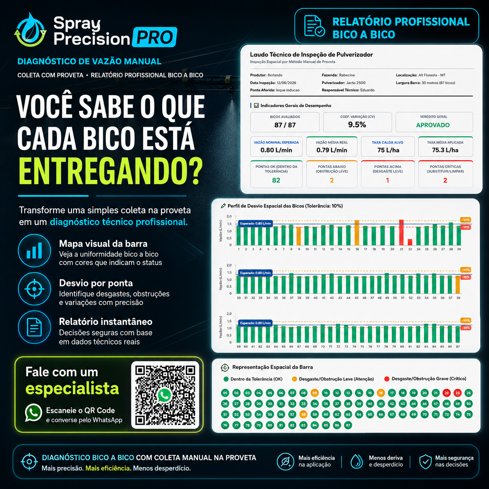
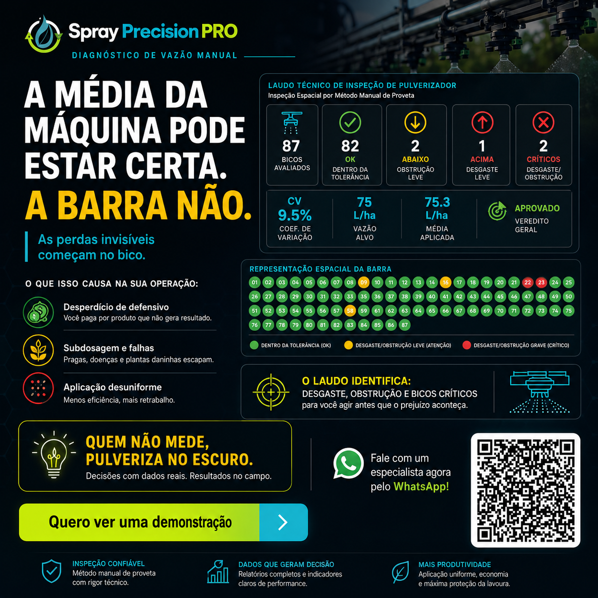

Desperdício de defensivo
Bicos desgastados aplicam excesso de produto químico caro por hectare, elevando o custo da produção sem trazer benefício técnico.
Elimine o achismo da calibração agrícola. Escolha o bico ideal pela estabilidade, meça a vazão real no campo e gere relatórios instantâneos para justificar a substituição de peças.

Embora a vazão geral de um pulverizador pareça correta no computador de bordo, bicos individuais obstruídos ou com desgaste excessivo geram perdas catastróficas.
Bicos desgastados aplicam excesso de produto químico caro por hectare, elevando o custo da produção sem trazer benefício técnico.
Bicos entupidos aplicam menos defensivo que o recomendado, gerando áreas sem controle que viram focos de pragas e plantas daninhas.
Sem um relatório visual claro, convencer o cliente a substituir pontas vira uma questão de opinião comercial. Com o laudo de desvio, torna-se uma necessidade evidente.
Insira a velocidade e a taxa de aplicação. O motor matemático da Spray PrecisionPRO calculará a vazão necessária e apontará qual ponta operará com a melhor estabilidade operacional.
Elimine o método baseado em tabelas de papel. Simule vazão, velocidade e pressão operacional antes de iniciar a pulverização para garantir gotas perfeitas e zero desperdício.

Realize testes bico a bico usando proveta. Lançando as coletas no aplicativo, o sistema processa os volumes e cria laudos com dados visuais prontos para guiar a substituição de peças.

O laudo técnico resume todos os indicadores de desempenho da barra de pulverização em uma única tela, oferecendo clareza e credibilidade comercial.
Com gráficos coloridos por seção da barra e percentuais de desvio exatos, o produtor entende com facilidade os riscos operacionais a que está exposto.
Acessar Demonstração Gratuita
Nossa plataforma atua como um motor de auditoria técnica para a sua equipe, convertendo dados em vendas físicas de peças e bicos de reposição.
Gere relatórios digitais personalizados com a sua identidade visual e envie por PDF diretamente no WhatsApp do cliente.
O aplicativo adota a sua logomarca, suas cores corporativas e o seu link direto de WhatsApp para cotação rápida de peças.
Mapeie o desgaste no campo e justifique vendas complexas de bicos com base em dados de desvio e vazão precisos.
Escaneie o QR Code ao lado ou fale diretamente com nosso time pelo WhatsApp para agendar uma demonstração completa do sistema.
Falar com Especialista